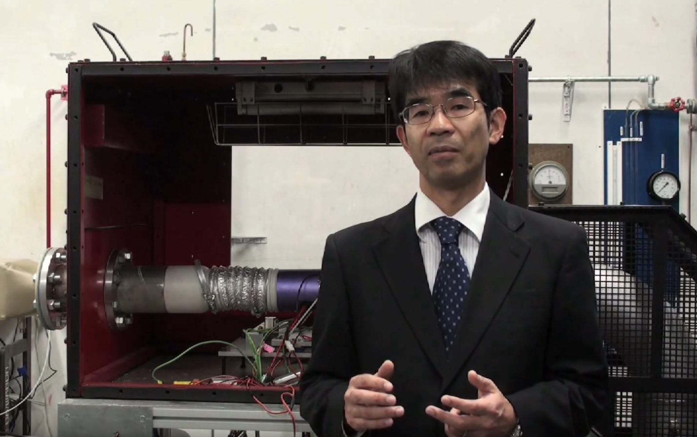

佐藤 哲也
Tetsuya SATO, Dr. of Eng.
Tetsuya SATO, Dr. of Eng.

早稲田大学 基幹理工学部 機械科学・航空宇宙学科 教授
| 1983年 | 筑波大学附属駒場高等学校 卒業 |
|---|---|
| 1987年 | 東京大学 工学部航空学科 卒業 |
| 1992年 |
東京大学大学院 工学系研究科航空学専攻 博士課程修了 (博士(工学))
|
| 1992年 | 文部省 宇宙科学研究所 宇宙推進研究系 助手 |
| 2002年 | 同助教授 |
| 2003年 | 宇宙航空研究開発機構 総合技術研究本部 エンジン試験技術開発センター 主任研究員 |
| 2006年 | 宇宙航空研究開発機構 総合技術研究本部 航空エンジン技術開発センター 主幹研究員 |
| 2007年 | 早稲田大学 基幹理工学部 機械科学・航空学科 教授 |
| 1991年 | 日本学術振興会 特別研究員DC |
|---|---|
1992年- 2002年 |
東京大学大学院 工学系研究科 航空学専攻 助手 |
|
2002年-
2005年 |
総合研究大学院大学 数物科学研究科宇宙科学専攻 助教授 |
| 2004年 | 英国ブリストル大学 航空宇宙工学科 客員研究員 |
| 2005年- 2007年 |
東京大学大学院 工学系研究科航空学専攻 助教授 |
当研究室は、JAXA と共同で新しい航空宇宙輸送システムの実現を目指して、開発
研究を行っています。キーワードは、「極超音速」、「液体水素(極低温、二相流)」で、
基礎現象の解明からエンジンシステム全体に関するプロジェクト志向の強いものま
で、多岐にわたる面白い研究テーマです。物事を詳細に、正確に突き詰めていくのも
ひとつのやり方ですが、大きな視点から全体をイメージすることを常に考えていきたい
と思っています。
情報化が進む中、新しいことを積極的に取り入れながらも、やはり、最後は人と人と
の繋がりを大切にしたいと思っています。何事も楽しもうというのがモットーで、ここ数
年は上手くならないゴルフと格闘しています。
一緒に研究を楽しみたい方、是非、連絡をお待ちしております。